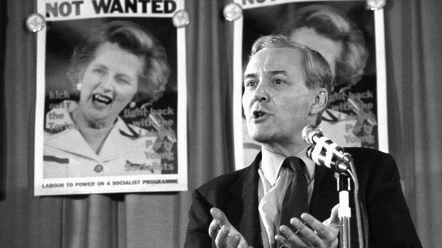

Published May 11, 2026

‘Democracy transfers power from the market place to the polling station, from the wallet to the ballot, from the king to the subjects’ – Tony Benn
This single line employs several sophisticated rhetorical devices to argue for a shift in power. At its core, the sentence is structured as a tricolon and parison, a sequence of three parallel phrases that build momentum. It is bound together by anaphora, the repetition of the word "from" at the beginning of each clause, which creates a driving, persistent rhythm. Within this tricolon, the speaker uses isocolon — ensuring each phrase has an equal length and identical grammatical structure — to make the transition of power feel orderly and inevitable.
The phrase "from the wallet to the ballot" is the most stylistically dense, utilizing paronomasia (a play on words with similar sounds) and homoioteleuton (words ending with the same sound). This phonetic rhyming links economic and political power, making the argument more "sticky" and memorable. This auditory connection reinforces the antithesis at play, which contrasts the private influence of wealth ("wallet") against the collective authority of democracy ("ballot").
The phrase also invokes metonymy, where physical objects represent broader concepts — such as the "wallet" standing in for capitalism and the "ballot" for democratic rights. By shifting the focus from "the king" to "the subjects," the passage uses auxesis, an arrangement of clauses that increase in importance or impact, concluding the movement of power with the most significant human shift. Together, these devices ground a complex political transformation in concrete, relatable imagery.
The rhetorical structure of this sentence creates a "sonic inevitability" that mirrors its political message. By using anaphora (repeating "from") and isocolon (equal phrase length), the speaker establishes a steady, marching cadence. This rhythmic consistency has a psychological political impact: it makes the radical transfer of power feel like a natural, rhythmic progression rather than a chaotic upheaval. The sound-based device of homoioteleuton (the rhyming of "wallet" and "ballot") further cements this; the rhyme suggests that these two concepts are naturally linked, making the shift from financial influence to democratic voting feel logical and "right" to the ear.
Politically, the use of metonymy — replacing abstract systems with concrete objects like "wallets" and "polling stations" — strips away complex jargon to make the power struggle accessible to the common person. The antithesis created by contrasting the "market place" with the "polling station" frames the political landscape as a clear choice between two competing worlds: one driven by money and the other by people. This contrast is sharpened by paronomasia, where the clever wordplay on "wallet" and "ballot" catches the listener's attention, ensuring the core political message remains memorable long after the speech ends.
The passage culminates in a final auxesis, where the scale of the transition expands from individual objects (wallets/ballots) to the entire social order (king/subjects). This arrangement ensures the most significant political shift—the literal overthrow of monarchy by the people—is placed at the end for maximum impact. By blending these sound-based patterns with stark political contrasts, the speaker transforms a complex ideological argument into a persuasive, rhythmic anthem for democratic change.